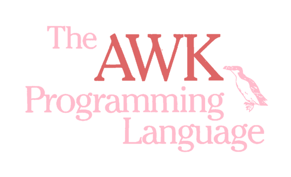

The AWK Programming Language
Alfred V. Aho • Brian W. Kernighan • Peter J. Weinberger
AT&T
Bell Laboratories
Originally developed by Alfred Aho, Brian Kernighan, and Peter Weinberger in 1977, AWK is a pattern-matching language for writing short programs to perform common data-manipulation tasks. In 1985, a new version of the language was developed, incorporating additional features such as multiple input files, dynamic regular expressions, and user-defined functions. This new version is available for both UNIX and MS-DOS.
This is the first book on AWK, It begins with a tutorial that shows how easy AWK is to use. The tutorial is followed by a comprehensive manual for the new version of AWK.
Subsequent chapters illustrate the language by a range of useful applications, such as:
- Retrieving, transforming, reducing, and validating data
- Managing small, personal databases
- Text processing
- Little languages
- Experimenting with algorithms
The examples illustrate the book’s three themes: showing how to use AWK well, demonstrating AWK’s versatility, and explaining how common computing operations are done. In addition, the book contains two appendixes: a summary of the language, and answers to selected exercises.
Addison-Wesley Publishing Company
ISBN 0-201-07981-X